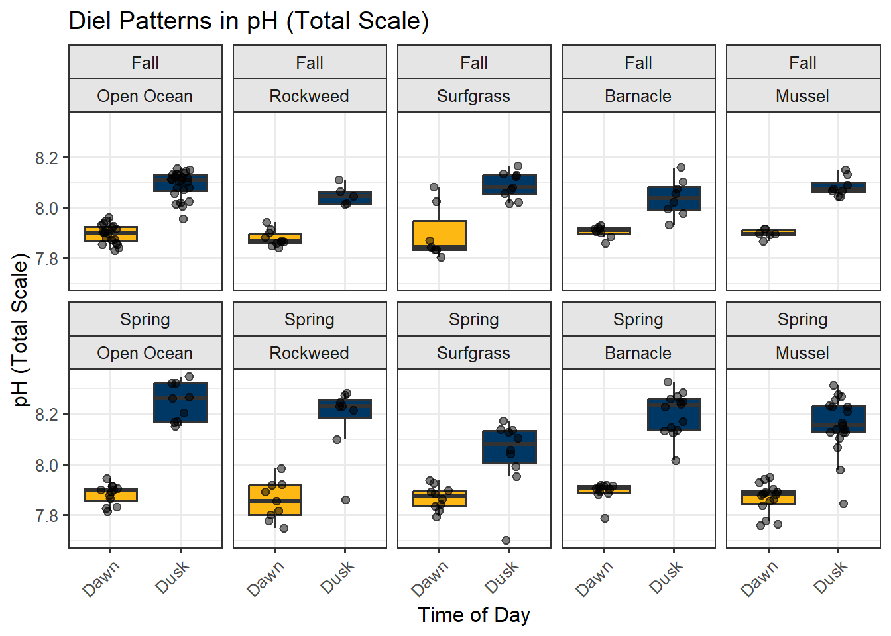
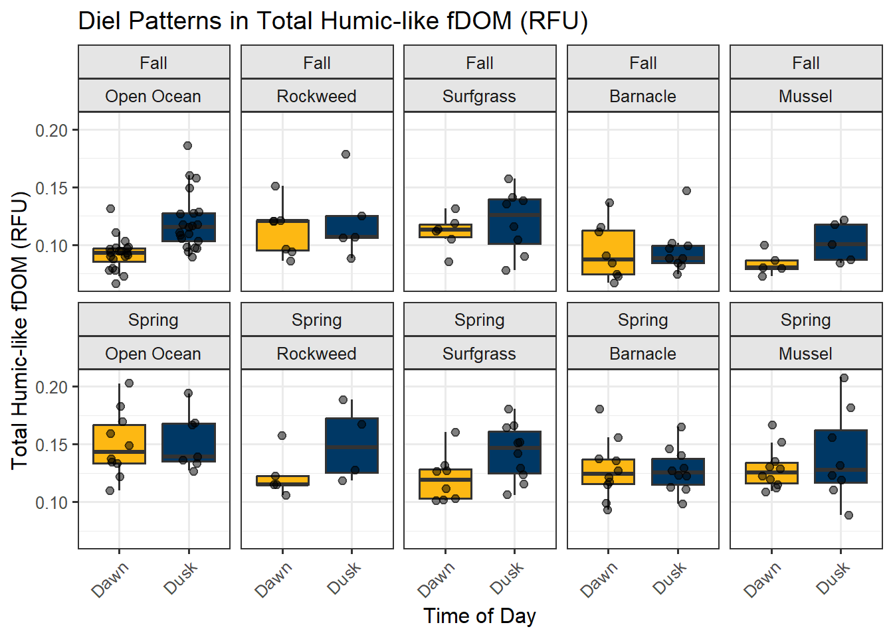

library(tidyverse)
library(patchwork)
library(rstatix)
library(ggcorrplot)
library(ggrepel)
library(here)
library(lubridate)
library(kableExtra)
# Global plot theme
theme_set(theme_bw(base_size = 12))Rocky Intertidal Biogeochemistry — Exploratory Analysis
1 Overview
This Quarto document:
- Loads and merges pH/TA/nutrients and fDOM datasets
- Cleans data and applies outlier handling (IQR rule)
- Summarizes by habitat and diel period
- Visualizes diel and habitat patterns (boxplots, TA–pH, fDOM heatmap)
- Computes correlation matrices and significance masks
- Runs non-parametric statistics (Kruskal–Wallis, Wilcoxon, Dunn vs. control)
- Performs PCA with scores and loadings plots
- Lists testable hypotheses informed by the exploratory results
Reproducibility & Modularity
Kept times (which removes summer), and the control label (open ocean) are parameterized in the YAMLparams:so I can change inputs without editing code chunks.
2 Setup
2.1 Paths & Parameters
keep_times <- params$keep_times
control_label <- params$control_label3 Data Loading & Merging
This section loads both fDOM and pH/nutrients CSVs, parses dates, and joins on shared identifiers. We keep all samples, regarless of missing data (full_join).
load_ok <- TRUE
tryCatch({
data_ph <- read_csv(here::here("Data","Biogeochemistry","pHProbe_Data_calculated.csv"), na = c("NA", ""), show_col_types = FALSE)
data_fdom <- read_csv(here::here("Data","Biogeochemistry","fDOM_clean.csv"), na = c("NA", ""), show_col_types = FALSE) %>%
mutate(Sampling_Date = lubridate::mdy(Sampling_Date))
data_merged <- full_join(
data_ph,
data_fdom,
by = c("UniqueID", "Benthos", "Quad_ID", "Day_Night", "Sampling_Date", "Sampling_Time","Season")
) %>%
mutate(Humic = UVHumic+VisibleHumic+MarineHumic,# make a column for humics
Prot = Tryptophan+Tyrosine # make a column for proteinaceaus fDOM
)
cat("Data loaded and merged successfully.\n")
cat("Total merged samples:", nrow(data_merged), "\n")
}, error = function(e){
load_ok <<- FALSE
message("Error loading or merging files. Please check file paths and names.")
message(e)
})Data loaded and merged successfully.
Total merged samples: 332 stopifnot(load_ok)4 Cleaning & Pre-processing
We declare variable sets for identifiers, water chemistry, nutrients, and fDOM components. We retain only Dawn and Dusk samples, coerce numeric columns, set factor orders, drop NA grouping levels, and apply the 1.5×IQR rule as a conservative outlier filter (replacing outliers with NA).
# Identifier variables
id_vars <- c("UniqueID", "Season", "Benthos", "Quad_ID", "Day_Night", "Sampling_Date")
# Water chemistry variables (from pH probe file)
water_chem_vars <- c("Salinity", "pH", "TempInSitu", "TA")
# Nutrient variables (from pH probe file)
nutrient_vars <- c("NO3", "PO4", "SIL", "NO2", "NH4")
# fDOM variables (from fDOM file)
#fdom_vars <- c("UVHumic", "Tyrosine", "VisibleHumic", "MarineHumic",
# "Tryptophan", "FulvicAcid", "BIX", "HIX", "FI", "M_to_C")
# reduced variables
fdom_vars <- c("Humic","Prot", "BIX", "HIX", "M_to_C")
all_numeric_vars <- c(water_chem_vars, nutrient_vars, fdom_vars)
# Helper to IQR-filter a numeric vector (returning NA for outliers)
iqr_filter <- function(x){
if(!is.numeric(x)) return(x)
q1 <- quantile(x, 0.25, na.rm = TRUE)
q3 <- quantile(x, 0.75, na.rm = TRUE)
iqr <- q3 - q1
lo <- q1 - 1.5 * iqr
hi <- q3 + 1.5 * iqr
ifelse(x < lo | x > hi, NA_real_, x)
}
# Cleaned dataset
data_clean <- data_merged %>%
filter(Day_Night %in% keep_times) %>%
select(all_of(id_vars), any_of(all_numeric_vars)) %>%
mutate(across(all_of(all_numeric_vars), as.numeric)) %>%
mutate(
Benthos = factor(Benthos, levels = c(control_label, "Rockweed", "Surfgrass", "Barnacle", "Mussel")),
Day_Night = factor(Day_Night, levels = c("Dawn", "Dusk"))
) %>%
drop_na(Benthos, Day_Night) %>%
mutate(across(all_of(all_numeric_vars), iqr_filter))4.1 Missingness Summary
na_summary <- data_clean %>%
summarise(across(everything(), ~ sum(is.na(.)))) %>%
pivot_longer(everything(), names_to = "variable", values_to = "na_count") %>%
filter(na_count > 0) %>%
arrange(desc(na_count))
na_summary# A tibble: 13 × 2
variable na_count
<chr> <int>
1 NH4 106
2 SIL 103
3 NO3 94
4 PO4 94
5 NO2 93
6 Prot 77
7 BIX 76
8 Humic 71
9 M_to_C 64
10 HIX 63
11 TA 54
12 Salinity 32
13 pH 255 Summary Statistics
Per habitat × diel period (and Season), we compute mean, SD, and sample size for all numeric variables.
data_summary <- data_clean %>%
group_by(Benthos, Day_Night, Season) %>%
summarise(
across(all_of(all_numeric_vars), list(mean = ~ mean(., na.rm = TRUE),
sd = ~ sd(., na.rm = TRUE),
n = ~ sum(!is.na(.))
)),
.groups = "drop"
)
data_summary %>%
kable()| Benthos | Day_Night | Season | Salinity_mean | Salinity_sd | Salinity_n | pH_mean | pH_sd | pH_n | TempInSitu_mean | TempInSitu_sd | TempInSitu_n | TA_mean | TA_sd | TA_n | NO3_mean | NO3_sd | NO3_n | PO4_mean | PO4_sd | PO4_n | SIL_mean | SIL_sd | SIL_n | NO2_mean | NO2_sd | NO2_n | NH4_mean | NH4_sd | NH4_n | Humic_mean | Humic_sd | Humic_n | Prot_mean | Prot_sd | Prot_n | BIX_mean | BIX_sd | BIX_n | HIX_mean | HIX_sd | HIX_n | M_to_C_mean | M_to_C_sd | M_to_C_n |
|---|---|---|---|---|---|---|---|---|---|---|---|---|---|---|---|---|---|---|---|---|---|---|---|---|---|---|---|---|---|---|---|---|---|---|---|---|---|---|---|---|---|---|---|---|
| Open Ocean | Dawn | Fall | 33.38100 | 0.3603054 | 20 | 7.895841 | 0.0370698 | 20 | 16.69300 | 0.3202483 | 20 | 2219.689 | 5.182439 | 18 | 1.8750000 | 1.7364249 | 8 | 0.3850000 | 0.0424264 | 8 | 4.662500 | 0.8331309 | 8 | 0.1512500 | 0.0405101 | 8 | 1.2000000 | 0.3291548 | 8 | 0.0920212 | 0.0140695 | 20 | 0.1044268 | 0.0370278 | 19 | 0.8945043 | 0.0654982 | 18 | 1.661112 | 0.5771392 | 20 | 0.7685855 | 0.0451426 | 20 |
| Open Ocean | Dawn | Spring | 33.47100 | 0.5936975 | 10 | 7.881854 | 0.0402283 | 12 | 14.71333 | 0.6306466 | 12 | 2225.683 | 8.358783 | 12 | 4.5366667 | 1.7531910 | 12 | 0.5872727 | 0.0835573 | 11 | 6.633333 | 2.0096736 | 12 | 0.1775000 | 0.0467343 | 12 | 1.4545455 | 0.4009081 | 11 | 0.1500804 | 0.0285321 | 10 | 0.1670105 | 0.0407329 | 5 | 0.9622442 | 0.0812800 | 5 | 1.161534 | 0.6243569 | 11 | 0.8176259 | 0.0423552 | 9 |
| Open Ocean | Dusk | Fall | 33.36208 | 0.2874775 | 24 | 8.090490 | 0.0533197 | 24 | 19.02560 | 0.7991823 | 25 | 2203.024 | 8.944417 | 23 | 2.2522222 | 1.0532423 | 9 | 0.4255556 | 0.0777996 | 9 | 5.233333 | 0.9486833 | 9 | 0.2122222 | 0.1209109 | 9 | 1.2300000 | 0.8075713 | 8 | 0.1197723 | 0.0249243 | 21 | 0.1222211 | 0.0418463 | 17 | 0.9258560 | 0.0848717 | 19 | 1.126585 | 0.3475266 | 20 | 0.8219864 | 0.0508778 | 21 |
| Open Ocean | Dusk | Spring | 33.37125 | 0.3949842 | 8 | 8.245637 | 0.0748407 | 9 | 15.54667 | 0.7608219 | 9 | 2217.774 | 14.150148 | 9 | 4.9225000 | 2.7673027 | 8 | 0.7100000 | 0.1690309 | 8 | 8.260000 | 2.0851858 | 5 | 0.2844444 | 0.1248110 | 9 | 1.5825000 | 0.4803198 | 8 | 0.1523270 | 0.0246222 | 7 | 0.1475228 | 0.0479288 | 7 | 0.9326984 | 0.0984941 | 7 | 2.017696 | 1.1042248 | 9 | 0.8284003 | 0.0738367 | 9 |
| Rockweed | Dawn | Fall | 33.41400 | 0.2791336 | 10 | 7.877666 | 0.0321614 | 10 | 16.82917 | 0.3819438 | 12 | 2191.153 | 21.010648 | 9 | 0.9685714 | 1.0548369 | 7 | 0.4371429 | 0.1914606 | 7 | 5.242857 | 0.5563486 | 7 | 0.1714286 | 0.1359447 | 7 | 0.8257143 | 0.5333810 | 7 | 0.1127562 | 0.0223109 | 7 | 0.0873509 | 0.0274071 | 7 | 0.8444586 | 0.0392276 | 6 | 2.257768 | 0.6613043 | 7 | 0.7762336 | 0.0568244 | 7 |
| Rockweed | Dawn | Spring | 33.64222 | 0.4889728 | 9 | 7.855984 | 0.0778063 | 9 | 14.40222 | 0.1141028 | 9 | 2206.656 | 15.635454 | 8 | 1.5600000 | 0.6988920 | 5 | 0.5383333 | 0.1402022 | 6 | 5.360000 | 1.1865918 | 5 | 0.1500000 | 0.0547723 | 5 | 1.1175000 | 0.1615292 | 4 | 0.1232823 | 0.0202061 | 5 | 0.1264665 | 0.0563820 | 6 | 0.8908205 | 0.0679577 | 6 | 1.941363 | 0.5779832 | 5 | 0.7932711 | 0.0323953 | 6 |
| Rockweed | Dusk | Fall | 33.49200 | 0.2987809 | 5 | 8.049176 | 0.0397228 | 5 | 18.38667 | 0.6511426 | 6 | 2192.423 | 37.722771 | 4 | 1.1050000 | 0.9965691 | 6 | 0.3900000 | 0.0460435 | 6 | 5.840000 | 1.9654516 | 5 | 0.1583333 | 0.0773089 | 6 | 0.8880000 | 0.2348829 | 5 | 0.1208133 | 0.0346784 | 5 | 0.0950034 | 0.0184559 | 6 | 0.8597974 | 0.0426723 | 6 | 1.922399 | 0.6562721 | 6 | 0.8088453 | 0.0302606 | 6 |
| Rockweed | Dusk | Spring | 33.41000 | 0.4397727 | 8 | 8.179804 | 0.1405340 | 8 | 15.94500 | 0.6891610 | 8 | 2215.180 | 14.283947 | 6 | 5.2940000 | 2.0029054 | 5 | 0.6033333 | 0.0917969 | 6 | 8.800000 | 2.5455844 | 2 | 0.3300000 | 0.1383835 | 5 | 1.4000000 | 0.3459769 | 3 | 0.1506933 | 0.0330243 | 4 | 0.1277635 | 0.0538177 | 7 | 0.8191324 | 0.0361366 | 7 | 3.115505 | 0.6287391 | 7 | 0.8040618 | 0.0816492 | 7 |
| Surfgrass | Dawn | Fall | 33.39286 | 0.1648953 | 7 | 7.897631 | 0.1088502 | 7 | 16.78556 | 0.3758028 | 9 | 2213.461 | 14.812645 | 3 | 0.6333333 | 0.1938728 | 6 | 0.3216667 | 0.0515429 | 6 | 5.350000 | 0.8916277 | 6 | 0.1133333 | 0.0791623 | 6 | 0.6683333 | 0.4844550 | 6 | 0.1109245 | 0.0154420 | 6 | 0.0873586 | 0.0197193 | 6 | 0.9090535 | 0.0490096 | 7 | 2.058321 | 0.3043213 | 7 | 0.7396067 | 0.0601923 | 7 |
| Surfgrass | Dawn | Spring | 33.56750 | 0.4792181 | 8 | 7.868478 | 0.0467848 | 10 | 14.36167 | 0.2132789 | 12 | 2212.029 | 10.789451 | 10 | 1.3237500 | 0.3048155 | 8 | 0.4933333 | 0.0578792 | 9 | 5.666667 | 1.1169154 | 9 | 0.1544444 | 0.0371184 | 9 | 1.0137500 | 0.2107766 | 8 | 0.1204366 | 0.0203869 | 8 | 0.1115370 | 0.0517331 | 8 | 0.8803619 | 0.0781380 | 9 | 1.837487 | 1.0009226 | 9 | 0.7750413 | 0.0428108 | 9 |
| Surfgrass | Dusk | Fall | 33.36000 | 0.1719011 | 9 | 8.088297 | 0.0523523 | 9 | 18.89917 | 0.7730160 | 12 | 2190.994 | 14.877382 | 8 | 0.4925000 | 0.3192290 | 8 | 0.3887500 | 0.1446609 | 8 | 4.650000 | 1.1389218 | 8 | 0.1112500 | 0.0429077 | 8 | 0.8150000 | 0.5741341 | 6 | 0.1199423 | 0.0276692 | 8 | 0.1192723 | 0.0353049 | 8 | 0.8466627 | 0.0601591 | 8 | 1.588013 | 0.5593020 | 8 | 0.7622972 | 0.0590778 | 8 |
| Surfgrass | Dusk | Spring | 33.44100 | 0.4400114 | 10 | 8.041989 | 0.1386101 | 10 | 14.87909 | 0.5579687 | 11 | 2206.070 | 19.112551 | 8 | 5.6830000 | 2.1019306 | 10 | 0.6980000 | 0.1103328 | 10 | 10.950000 | 1.8110770 | 8 | 0.3380000 | 0.0755425 | 10 | 1.2600000 | 0.4355074 | 10 | 0.1431342 | 0.0241700 | 10 | 0.1122324 | 0.0327603 | 10 | 0.8456035 | 0.0554959 | 9 | 2.166671 | 0.5315292 | 9 | 0.7582885 | 0.0660350 | 10 |
| Barnacle | Dawn | Fall | 33.44250 | 0.1875976 | 8 | 7.904071 | 0.0231209 | 8 | 17.10556 | 0.3453662 | 9 | 2186.368 | 12.876338 | 7 | 1.0362500 | 0.8035624 | 8 | 0.3287500 | 0.0664267 | 8 | 3.887500 | 0.4998214 | 8 | 0.1912500 | 0.1101217 | 8 | 1.3262500 | 0.5783706 | 8 | 0.0940806 | 0.0245387 | 8 | 0.0889252 | 0.0260054 | 8 | 0.8819046 | 0.0414293 | 8 | 1.881248 | 0.1910608 | 8 | 0.7471533 | 0.0266193 | 8 |
| Barnacle | Dawn | Spring | 33.47556 | 0.5347455 | 9 | 7.893685 | 0.0377390 | 11 | 14.71538 | 0.6333721 | 13 | 2221.374 | 15.454368 | 8 | 2.0525000 | 1.2563638 | 8 | 0.4625000 | 0.0462138 | 8 | 5.675000 | 2.3236363 | 8 | 0.1637500 | 0.0552753 | 8 | 1.3112500 | 0.4398194 | 8 | 0.1282791 | 0.0259437 | 10 | 0.1029668 | 0.0542313 | 10 | 0.8598643 | 0.0478491 | 9 | 2.520103 | 1.0232441 | 10 | 0.7935357 | 0.0598026 | 9 |
| Barnacle | Dusk | Fall | 33.34125 | 0.2042714 | 8 | 8.038811 | 0.0733546 | 8 | 18.67909 | 0.9594212 | 11 | 2189.224 | 17.012351 | 7 | 0.9020000 | 0.7003777 | 10 | 0.3880000 | 0.0561348 | 10 | 4.490000 | 0.6261878 | 10 | 0.1820000 | 0.0928320 | 10 | 0.9550000 | 0.5188173 | 8 | 0.0956959 | 0.0209674 | 9 | 0.1011850 | 0.0351238 | 9 | 0.8635346 | 0.0569102 | 9 | 1.220953 | 0.2273415 | 9 | 0.7283660 | 0.0464750 | 9 |
| Barnacle | Dusk | Spring | 33.64714 | 0.4252859 | 14 | 8.202076 | 0.0841076 | 14 | 15.37933 | 0.7513366 | 15 | 2201.395 | 11.875585 | 11 | 3.6777778 | 2.3006672 | 9 | 0.5622222 | 0.0881445 | 9 | 9.037500 | 2.6370641 | 8 | 0.2444444 | 0.1094430 | 9 | 0.9433333 | 0.3011229 | 9 | 0.1276182 | 0.0191651 | 10 | 0.1001024 | 0.0179265 | 10 | 0.8658311 | 0.0292649 | 10 | 2.321615 | 0.5993273 | 10 | 0.8288419 | 0.0350909 | 10 |
| Mussel | Dawn | Fall | 33.53000 | 0.2606147 | 6 | 7.897666 | 0.0185127 | 6 | 17.24714 | 0.1742330 | 7 | 2202.115 | 20.563508 | 6 | 0.9700000 | 0.3880722 | 5 | 0.3000000 | 0.0452769 | 5 | 4.020000 | 0.3193744 | 5 | 0.1520000 | 0.0454973 | 5 | 0.9280000 | 0.3692831 | 5 | 0.0837904 | 0.0103017 | 5 | 0.0682098 | 0.0074102 | 5 | 0.8970827 | 0.0351114 | 5 | 2.017290 | 0.2383014 | 5 | 0.7427660 | 0.0238183 | 5 |
| Mussel | Dawn | Spring | 33.61067 | 0.3814159 | 15 | 7.866524 | 0.0602747 | 15 | 14.95105 | 0.6214669 | 19 | 2216.107 | 23.421643 | 12 | 2.0066667 | 0.6075154 | 9 | 0.5575000 | 0.1212730 | 8 | 6.144444 | 1.3947322 | 9 | 0.1755556 | 0.0534114 | 9 | 1.3275000 | 0.4642582 | 8 | 0.1290979 | 0.0182204 | 10 | 0.1044528 | 0.0478919 | 9 | 0.9182696 | 0.0960494 | 10 | 2.021526 | 1.0181238 | 10 | 0.7931125 | 0.0572026 | 10 |
| Mussel | Dusk | Fall | 33.48125 | 0.1833371 | 8 | 8.082125 | 0.0388314 | 8 | 19.73125 | 0.3826762 | 8 | 2194.209 | 19.112938 | 7 | 0.7316667 | 0.5541630 | 6 | 0.2460000 | 0.1297305 | 5 | 4.333333 | 1.5331884 | 6 | 0.1480000 | 0.1175585 | 5 | 1.0650000 | 0.6507457 | 6 | 0.1021536 | 0.0172806 | 5 | 0.1220871 | 0.0321993 | 5 | 0.8757572 | 0.0437616 | 4 | 1.280266 | 0.4690939 | 5 | 0.7614289 | 0.0774763 | 5 |
| Mussel | Dusk | Spring | 33.57158 | 0.4624003 | 19 | 8.156956 | 0.1116214 | 19 | 15.28000 | 0.8648882 | 20 | 2200.295 | 19.221109 | 17 | 4.0466667 | 1.7320470 | 6 | 0.6700000 | 0.0864870 | 6 | 10.350000 | 1.8218123 | 6 | 0.2983333 | 0.1132107 | 6 | 1.2180000 | 0.3126020 | 5 | 0.1398866 | 0.0395086 | 8 | 0.1384014 | 0.0405833 | 8 | 0.9081010 | 0.0655055 | 9 | 1.834786 | 0.5226819 | 9 | 0.7855871 | 0.0576868 | 8 |
6 Correlation Matrix
We compute a Pearson correlation matrix on complete cases and visualize it with significance masking.
cor_data <- data_clean %>% select(all_of(all_numeric_vars)) %>% drop_na()
if(nrow(cor_data) > 0){
cor_mat <- rstatix::cor_mat(cor_data)
cor_p <- rstatix::cor_pmat(cor_data)
ggcorrplot(
cor_mat,
hc.order = TRUE,
type = "lower",
p.mat = cor_p,
sig.level = 0.05,
insig = "blank",
lab = TRUE,
lab_size = 2.5,
colors = c("#6D9EC1", "white", "#E46726"),
title = "Correlation Matrix of Biogeochemical Variables (white not significant)"
)
} else {
cat("Not enough complete data (after drop_na) to compute correlation matrix or PCA.\n")
}7 Diel & Habitat Visualizations
A helper function produces publication-ready boxplots with jitter, faceted by Season × Benthos.
#' Create diel (Dawn vs Dusk) boxplot faceted by Season × Benthos
#' @param var_to_plot Column name (string)
#' @param var_label Y-axis label (string)
plot_diel_comparison <- function(var_to_plot, var_label){
stopifnot(var_to_plot %in% names(data_clean))
data_clean %>%
filter(!is.na(.data[[var_to_plot]])) %>%
ggplot(aes(x = Day_Night, y = .data[[var_to_plot]], fill = Day_Night)) +
geom_boxplot(outlier.shape = NA) +
geom_jitter(width = 0.15, alpha = 0.5, size = 2) +
facet_wrap(Season ~ Benthos,
# scales = "free_y",
ncol = 5) +
scale_fill_manual(values = c("Dawn" = "#FDB813", "Dusk" = "#003865")) +
labs(title = paste("Diel Patterns in", var_label), x = "Time of Day", y = var_label) +
theme(legend.position = "none", strip.background = element_rect(fill = "grey90"),
axis.text.x = element_text(angle = 45, hjust = 1))
}7.1 Example Diel Plots
(p_ph <- plot_diel_comparison("pH", "pH (Total Scale)"))
(p_no3 <- plot_diel_comparison("NO3", "Nitrate (µmol/L)"))(p_no3 <- plot_diel_comparison("NO3", "Nitrate (µmol/L)")+
facet_wrap(Season~Benthos, scales = "free_y", ncol = 5)+
labs(title = "free y to show within season comparison")) # show it again but with free y#(p_trp <- plot_diel_comparison("Tryptophan", "Tryptophan-like fDOM (RFU)"))
(p_nh4 <- plot_diel_comparison("NH4", "Ammonium (µmol/L)"))(p_mc <- plot_diel_comparison("M_to_C", "M:C"))(p_TA <- plot_diel_comparison("TA", "Total Alkalinity (µmol/kg)"))(p_bix <- plot_diel_comparison("BIX", "BIX"))(p_humic <- plot_diel_comparison("Humic", "Total Humic-like fDOM (RFU)"))
(p_prot <- plot_diel_comparison("Prot", "Total Proteinaceaous-like fDOM (RFU)"))8 Carbonate & fDOM Patterns
8.1 Carbonate Chemistry (pH vs TA)
Interpret vectors: Respiration ↓pH (TA ~ constant), Photosynthesis ↑pH (TA ~ constant), Calcification ↓TA & ↓pH, Dissolution ↑TA & ↑pH.
data_clean %>%
ggplot(aes(x = pH, y = TA, color = Benthos, shape = Day_Night)) +
geom_point(size = 3.5, alpha = 0.8) +
scale_color_brewer(palette = "Set1") +
facet_wrap(~ Season) +
labs(title = "Carbonate Chemistry: pH vs. Total Alkalinity",
x = "Total Alkalinity (µmol/kg)", y = "pH (Total Scale)",
color = "Habitat", shape = "Time of Day") +
theme(legend.position = "right")8.2 fDOM and Nutrient Heatmap
We compute mean values by Benthos × Day_Night × Season, then z-scale within each fDOM or nutrient component to compare relative patterns.
fdom_heatmap_data <- data_clean %>%
group_by(Benthos, Day_Night, Season) %>%
summarise(across(all_of(c(fdom_vars, nutrient_vars)), ~ mean(., na.rm = TRUE)), .groups = "drop") %>%
pivot_longer(cols = all_of(c(fdom_vars, nutrient_vars)), names_to = "fDOM_Component", values_to = "Mean_Value") %>%
group_by(fDOM_Component) %>%
mutate(Mean_Value_Scaled = as.numeric(scale(Mean_Value))) %>%
ungroup()
fdom_heatmap_data %>%
ggplot(aes(x = fDOM_Component, y = paste(Benthos, Day_Night, sep = " - "), fill = Mean_Value_Scaled)) +
geom_tile(color = "white") +
scale_fill_gradient2(low = "#075AFF", mid = "white", high = "#FF4500", midpoint = 0, name = "Scaled
Mean Value") +
labs(title = "Mean fDOM and nutrient Component Signatures (Scaled by Component)", x = "fDOM Component", y = "Habitat and Time",
subtitle = "0 is the mean: positive is higher and negative is lower than the mean") +
theme_minimal() +
theme(axis.text.x = element_text(angle = 45, hjust = 1))+
facet_wrap(~Season)9 Statistical Comparisons
We use non-parametric tests (Kruskal–Wallis for among-habitat differences, Wilcoxon for diel contrasts within habitat, and Dunn post-hoc comparisons vs the ocean control).
# Kruskal–Wallis across habitats (per variable across all time points)
# Is there a difference in the average value by group?
stats_habitat <- map_dfr(all_numeric_vars, function(v){
data_clean %>%
kruskal_test(as.formula(paste(v, "~ Benthos"))) %>%
mutate(variable = v)
}) %>%
adjust_pvalue(method = "bonferroni") %>%
add_significance("p.adj")
stats_habitat %>%
filter(p.adj<0.055)# A tibble: 4 × 9
.y. n statistic df p method variable p.adj p.adj.signif
<chr> <int> <dbl> <int> <dbl> <chr> <chr> <dbl> <chr>
1 TA 247 17.4 4 0.00164 Kruskal… TA 2.30e-2 *
2 BIX 247 19.1 4 0.000744 Kruskal… BIX 1.04e-2 *
3 HIX 247 28.8 4 0.00000859 Kruskal… HIX 1.20e-4 ***
4 M_to_C 247 15.5 4 0.00373 Kruskal… M_to_C 5.22e-2 ns Comparing between Dawn and Dusk tells us more about the biological drivers. Is there a difference between day and night? If so it is probably metabolically driven (though could still be due to the metabolism of the ocean sample - i.e. the kelp forest)
# Wilcoxon Dawn vs Dusk within habitat (per variable)
stats_diel <- map_dfr(all_numeric_vars, function(v){
data_clean %>%
group_by(Benthos, Season) %>%
wilcox_test(as.formula(paste(v, "~ Day_Night")), p.adjust.method = "bonferroni") %>%
mutate(variable = v)
}) %>% add_significance("p")
stats_diel %>%
filter(p<0.055) %>%
kable()| Season | Benthos | .y. | group1 | group2 | n1 | n2 | statistic | p | variable | p.signif |
|---|---|---|---|---|---|---|---|---|---|---|
| Fall | Open Ocean | pH | Dawn | Dusk | 20 | 24 | 1.0 | 0.00e+00 | pH | **** |
| Spring | Open Ocean | pH | Dawn | Dusk | 12 | 9 | 0.0 | 6.80e-06 | pH | **** |
| Fall | Rockweed | pH | Dawn | Dusk | 10 | 5 | 0.0 | 6.66e-04 | pH | *** |
| Spring | Rockweed | pH | Dawn | Dusk | 9 | 8 | 4.0 | 9.87e-04 | pH | *** |
| Fall | Surfgrass | pH | Dawn | Dusk | 7 | 9 | 7.0 | 7.87e-03 | pH | ** |
| Spring | Surfgrass | pH | Dawn | Dusk | 10 | 10 | 10.0 | 1.50e-03 | pH | ** |
| Fall | Barnacle | pH | Dawn | Dusk | 8 | 8 | 0.0 | 1.55e-04 | pH | *** |
| Spring | Barnacle | pH | Dawn | Dusk | 11 | 14 | 0.0 | 4.00e-07 | pH | **** |
| Fall | Mussel | pH | Dawn | Dusk | 6 | 8 | 0.0 | 6.66e-04 | pH | *** |
| Spring | Mussel | pH | Dawn | Dusk | 15 | 19 | 11.0 | 2.00e-07 | pH | **** |
| Fall | Open Ocean | TempInSitu | Dawn | Dusk | 20 | 25 | 0.0 | 0.00e+00 | TempInSitu | **** |
| Spring | Open Ocean | TempInSitu | Dawn | Dusk | 12 | 9 | 18.0 | 1.14e-02 | TempInSitu | * |
| Fall | Rockweed | TempInSitu | Dawn | Dusk | 12 | 6 | 0.0 | 8.74e-04 | TempInSitu | *** |
| Spring | Rockweed | TempInSitu | Dawn | Dusk | 9 | 8 | 0.0 | 6.21e-04 | TempInSitu | *** |
| Fall | Surfgrass | TempInSitu | Dawn | Dusk | 9 | 12 | 0.0 | 1.36e-04 | TempInSitu | *** |
| Spring | Surfgrass | TempInSitu | Dawn | Dusk | 12 | 11 | 20.5 | 5.58e-03 | TempInSitu | ** |
| Fall | Barnacle | TempInSitu | Dawn | Dusk | 9 | 11 | 3.0 | 4.70e-04 | TempInSitu | *** |
| Spring | Barnacle | TempInSitu | Dawn | Dusk | 13 | 15 | 44.0 | 1.45e-02 | TempInSitu | * |
| Fall | Mussel | TempInSitu | Dawn | Dusk | 7 | 8 | 0.0 | 1.43e-03 | TempInSitu | ** |
| Fall | Open Ocean | TA | Dawn | Dusk | 18 | 23 | 389.0 | 1.00e-07 | TA | **** |
| Spring | Barnacle | TA | Dawn | Dusk | 8 | 11 | 78.0 | 3.60e-03 | TA | ** |
| Spring | Rockweed | NO3 | Dawn | Dusk | 5 | 5 | 1.0 | 1.59e-02 | NO3 | * |
| Spring | Surfgrass | NO3 | Dawn | Dusk | 8 | 10 | 4.0 | 5.48e-04 | NO3 | *** |
| Spring | Mussel | NO3 | Dawn | Dusk | 9 | 6 | 9.0 | 3.60e-02 | NO3 | * |
| Spring | Surfgrass | PO4 | Dawn | Dusk | 9 | 10 | 3.0 | 6.95e-04 | PO4 | *** |
| Spring | Barnacle | PO4 | Dawn | Dusk | 8 | 9 | 11.5 | 2.06e-02 | PO4 | * |
| Spring | Mussel | PO4 | Dawn | Dusk | 8 | 6 | 8.0 | 4.26e-02 | PO4 | * |
| Spring | Surfgrass | SIL | Dawn | Dusk | 9 | 8 | 1.5 | 1.05e-03 | SIL | ** |
| Spring | Barnacle | SIL | Dawn | Dusk | 8 | 8 | 11.0 | 3.12e-02 | SIL | * |
| Spring | Mussel | SIL | Dawn | Dusk | 9 | 6 | 1.5 | 3.16e-03 | SIL | ** |
| Spring | Surfgrass | NO2 | Dawn | Dusk | 9 | 10 | 4.0 | 9.15e-04 | NO2 | *** |
| Spring | Mussel | NO2 | Dawn | Dusk | 9 | 6 | 8.5 | 3.31e-02 | NO2 | * |
| Fall | Open Ocean | Humic | Dawn | Dusk | 20 | 21 | 52.0 | 1.12e-05 | Humic | **** |
| Spring | Surfgrass | Humic | Dawn | Dusk | 8 | 10 | 18.0 | 5.45e-02 | Humic | ns |
| Fall | Surfgrass | Prot | Dawn | Dusk | 6 | 8 | 8.0 | 4.26e-02 | Prot | * |
| Fall | Mussel | Prot | Dawn | Dusk | 5 | 5 | 0.0 | 7.94e-03 | Prot | ** |
| Spring | Rockweed | BIX | Dawn | Dusk | 6 | 7 | 37.0 | 2.21e-02 | BIX | * |
| Fall | Open Ocean | HIX | Dawn | Dusk | 20 | 20 | 329.0 | 2.92e-04 | HIX | *** |
| Spring | Rockweed | HIX | Dawn | Dusk | 5 | 7 | 2.0 | 1.01e-02 | HIX | * |
| Fall | Barnacle | HIX | Dawn | Dusk | 8 | 9 | 72.0 | 8.23e-05 | HIX | **** |
| Fall | Mussel | HIX | Dawn | Dusk | 5 | 5 | 24.0 | 1.59e-02 | HIX | * |
| Fall | Open Ocean | M_to_C | Dawn | Dusk | 20 | 21 | 71.0 | 1.57e-04 | M_to_C | *** |
Compare each variable to the ocean. Is it different from the ocean? If so probably because of the critters in the plot. This is by season and time of day for now
# Dunn post-hoc vs control
stats_vs_ocean <- map_dfr(all_numeric_vars, function(v){
data_clean %>%
group_by(Season, Day_Night) %>%
dunn_test(as.formula(paste(v, "~ Benthos")), p.adjust.method = "bonferroni") %>%
mutate(variable = v)
}) %>%
filter(group1 == control_label | group2 == control_label) %>%
add_significance("p.adj")
stats_vs_ocean %>%
filter(p.adj<0.055) %>%
kable()| Season | Day_Night | .y. | group1 | group2 | n1 | n2 | statistic | p | p.adj | p.adj.signif | variable |
|---|---|---|---|---|---|---|---|---|---|---|---|
| Spring | Dusk | pH | Open Ocean | Surfgrass | 9 | 10 | -3.731735 | 0.0001902 | 0.0019017 | ** | pH |
| Fall | Dawn | TempInSitu | Open Ocean | Mussel | 20 | 7 | 3.537701 | 0.0004036 | 0.0040363 | ** | TempInSitu |
| Fall | Dawn | TA | Open Ocean | Rockweed | 18 | 9 | -3.446357 | 0.0005682 | 0.0056820 | ** | TA |
| Fall | Dawn | TA | Open Ocean | Barnacle | 18 | 7 | -3.700687 | 0.0002150 | 0.0021502 | ** | TA |
| Fall | Dusk | NO3 | Open Ocean | Surfgrass | 9 | 8 | -3.441596 | 0.0005783 | 0.0057829 | ** | NO3 |
| Spring | Dawn | NO3 | Open Ocean | Rockweed | 12 | 5 | -3.177742 | 0.0014843 | 0.0148427 | * | NO3 |
| Spring | Dawn | NO3 | Open Ocean | Surfgrass | 12 | 8 | -4.342098 | 0.0000141 | 0.0001411 | *** | NO3 |
| Spring | Dawn | NO3 | Open Ocean | Barnacle | 12 | 8 | -2.980309 | 0.0028796 | 0.0287958 | * | NO3 |
| Fall | Dawn | PO4 | Open Ocean | Mussel | 8 | 5 | -2.874490 | 0.0040468 | 0.0404681 | * | PO4 |
| Spring | Dawn | PO4 | Open Ocean | Barnacle | 11 | 8 | -2.965018 | 0.0030266 | 0.0302665 | * | PO4 |
| Spring | Dusk | NH4 | Open Ocean | Barnacle | 8 | 9 | -2.951625 | 0.0031611 | 0.0316107 | * | NH4 |
| Spring | Dusk | BIX | Open Ocean | Rockweed | 7 | 7 | -2.853902 | 0.0043186 | 0.0431859 | * | BIX |
| Fall | Dawn | HIX | Open Ocean | Rockweed | 20 | 7 | 2.835131 | 0.0045807 | 0.0458069 | * | HIX |
| Fall | Dusk | HIX | Open Ocean | Rockweed | 20 | 6 | 2.792848 | 0.0052246 | 0.0522462 | ns | HIX |
| Spring | Dawn | HIX | Open Ocean | Barnacle | 11 | 10 | 3.123966 | 0.0017843 | 0.0178431 | * | HIX |
| Fall | Dusk | M_to_C | Open Ocean | Barnacle | 21 | 9 | -4.146181 | 0.0000338 | 0.0003381 | *** | M_to_C |
10 Multivariate Analysis: PCA
We run PCA on scaled, complete numeric cases and produce Scores (samples) and Loadings (variables) plots.
pca_data <- data_clean %>% select(all_of(all_numeric_vars)) %>% drop_na() %>%
select(-c(Salinity, TempInSitu)) # remove salinity and temp because not really important here
pca_ids <- data_clean %>% drop_na(all_of(all_numeric_vars))%>%
select(all_of(id_vars))if(nrow(pca_data) > 2){
pca_fit <- prcomp(scale(pca_data))
pvar <- round(pca_fit$sdev^2 / sum(pca_fit$sdev^2) * 100, 1)
scores <- as_tibble(pca_fit$x) %>% select(PC1, PC2) %>% bind_cols(pca_ids)
loadings <- as_tibble(pca_fit$rotation, rownames = "variable") %>% select(variable, PC1, PC2)
plot_scores <- ggplot(scores, aes(PC1, PC2, color = Benthos, shape = Day_Night)) +
geom_point(size = 4, alpha = 0.7) +
scale_color_brewer(palette = "Set2") +
labs(title = "PCA of Samples", x = paste0("PC1 (", pvar[1], "%)"), y = paste0("PC2 (", pvar[2], "%)"), color = "Habitat", shape = "Time of Day")+
facet_wrap(~Day_Night, ncol = 1)
plot_loadings <- ggplot(loadings, aes(PC1, PC2, label = variable)) +
geom_segment(aes(x = 0, y = 0, xend = PC1*2, yend = PC2*2), arrow = arrow(length = unit(0.2, "cm")), color = "grey50") +
geom_text_repel(size = 3.5) +
geom_hline(yintercept = 0, linetype = "dashed", color = "grey70") +
geom_vline(xintercept = 0, linetype = "dashed", color = "grey70") +
labs(title = "PCA Loadings (Variables)", x = paste0("PC1 (", pvar[1], "%)"), y = paste0("PC2 (", pvar[2], "%)"))
plot_scores + plot_loadings
} else {
cat("Skipping PCA: Not enough complete cases for analysis.\n")
}Not too much going on with the PCA, but there are lots of variables right now.
11 Potential hypotheses to test
- H1 (Net Photosynthesis): Producer habitats (Rockweed, Surfgrass) exhibit higher pH and lower DIN (NO3, PO4) at Dusk vs Dawn, relative to the Open Ocean control.
- H2 (Respiration/Excretion): Animal habitats (Mussel, Barnacle) show lower pH and higher NH4 at Dawn after nighttime respiration.
- H3 (Calcification Signature): Calcifying habitats reduce TA relative to control, particularly at night, shifting points down-left in TA–pH space. Also lower TA at dusk means they have been calcifying all day. Lower TA than the Ocean shows the calcification signature. Higher than ocean is dissolution. Note: look for CCA in the surfgrass and rockweed beds in the cover data.
- H4 (DOM Source): Animal habitats elevate protein-like fDOM (Tyrosine, Tryptophan) and shift DOM indices (low HIX, high BIX). Producer habitats should have higher Humics.